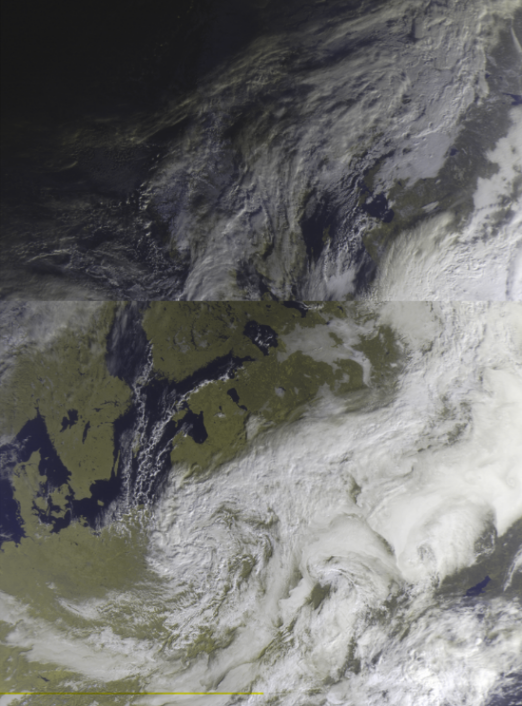
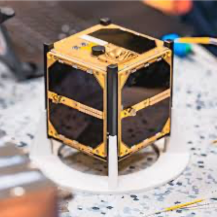
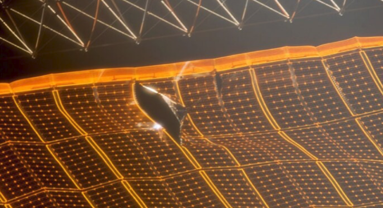

Antény do škol – Manuál
Úvod
Ahoj! Máte před sebou manuál, v němž krok po kroku zjistíte, jak anténu používat a přijmout s ní první data. Snažili jsme se návod sepsat co nejstručněji, zároveň však tak, aby obsahoval vše podstatné. V případě dotazů se na nás můžete obrátit – kontaktní údaje najdete na zadní stránce manuálu.
Na začátek ale – o čem vlastně Antény do škol jsou?
Jedná se o projekt vytvořený středoškoláky z týmu LASAR, s cílem přiblížit vesmír studentům z České republiky a ukázat jim, jak moc je space na dosah.
Co najdete v krabici?
V krabici vidíte dvě antény. Zaměříme se nejprve na větší z nich.
Yagi-Uda anténa
Větší anténa se jmenuje Yagi-Uda (zkráceně Yagina), podle dvou japonských vynálezců, kteří ji před téměř 100 lety sestrojili.
Ačkoliv připomíná zbraň ze sci-fi filmu, žádné paprsky nestřílí. Místo toho dokáže velmi dobře přijímat elektromagnetické vlny i na velké vzdálenosti.
Pro porovnání:
- Mobilní telefon zachytí Wi-Fi přibližně na desítky metrů.
- V husté zástavbě nebo přes několik zdí je dosah ještě menší.
Yagina je ale natolik citlivá, že dokáže zachytit přenosy přicházející až z oběžné dráhy Země – tedy ze vzdálenosti stovek až tisíců kilometrů.
Konstrukce Yagi antény
Půjdeme-li od přední části (tou budete mířit na oblohu), uvidíte:
Direktory
Pět kratších tyček vpředu. Fungují jako soustava čoček v dalekohledu – usměrňují a zaostřují elektromagnetické vlny směrem k dalšímu prvku.
Zářič
Šestá tyčka v pořadí. Jako jediná je připojena k počítači pomocí koaxiálního kabelu. Právě zde se indukuje elektrický proud, který počítač převádí na data.
Reflektor
Sedmá tyčka, nejblíže držáku. Funguje jako síť za brankářem – pokud vlna projde přes zářič, reflektor ji odrazí zpět, aby ji zářič mohl zachytit.
Zesilovač
Nachází se v bílé krabičce mezi zářičem a reflektorem. Zesiluje přijatý signál a čistí ho od parazitního šumu. Výsledkem je výrazně čistší spektrum, ze kterého lze získat více informací.
obrázek waterfallu bez zesilovače a se zesilovačem (exaggerated) sem se dají všechny teorie ohledně co je to anténa a tak <
Druhá anténa – Dipól
Druhá anténa je menší a konstrukčně jednodušší. Říká se jí dipól.
Nenechte se zmást – s touto anténou můžete přijímat satelitní snímky Země, podobné těm, které vídáte v televizi při předpovědi počasí.
Používají se například:
- pro meteorologii,
- v zemědělství,
- ke sledování změn krajiny.
obrázek z METEORu (dodáme z engineeringu) < obrázek METEORu <

Jak to celé funguje?
Možná si říkáte:
Vždyť jsou to jen dvě tyčky. Jak z toho může vzniknout obrázek?
Analogicky:
- Yagi je jako přesný sniper – zachytí slabé přenosy z malých družic, ale musíte přesně mířit.
- Dipól je jako všímavá babička na balkoně – není tak citlivý, ale zachytí skoro všechno, co proletí kolem.
Co vysílá data? Seznamte se: LASARsat
Seznamte se s družicí LASARsat.

I když je oproti velkým družicím (například GPS, které jsou velké jako menší auto) velmi malý – téměř se vejde do dlaně – má velký úkol.
Jeho primární úkol? Doslova být terčem.
Ano, opravdu. Testujeme na něm laserové sledování a interakci s objekty na oběžné dráze.
Proč?
Kvůli vesmírnému smetí.
Vesmírné smetí tvoří zbytky raket a nefunkčních družic. Ty mohou narážet do dalších objektů a vytvářet další úlomky. Proto se hledají metody, jak jej monitorovat a v budoucnu odstraňovat.
obrázek vesmírného smetí <
díra v solárním panelu ISS po zásahu úlomkem <

Druhotný úkol
Když po něm zrovna nikdo nestřílí, vysílá vědecká data zpět na Zemi.
Na palubě má například dozimetry – senzory měřící ionizující záření v okolí.
obrázek paluby LASARsatu <
sem se dají všechny teorie vysílání a tak, k čemu je digitální rádio, co je koaxiální kabel atd. <
Přijetí LASARsatu pomocí Yagi antény
Příprava hardwaru
- Vyjměte Yagi anténu z krabice.
- Odstraňte polystyrenové ochrany.
- Nesundávejte černé konce direktorů.
- Vyjměte digitální rádio RTL-SDR.
- Sundejte červenou ochrannou krytku.
- Našroubujte koaxiální kabel z antény na mosazný konektor.
Software – příprava (doporučeno předem, cca 30 min)
Look4Sat (Android/iOS)
- Nainstalujte aplikaci Look4Sat.
- Klikněte na žluté tlačítko s fajfkou.
- Do Search by Name/ID zadejte LASARSAT.
- Vyberte nalezený satelit.
- Opět klikněte na žlutou fajfku.
- Vyberte nejbližší přelet.
Kompas reaguje na náklon telefonu – horní hrana ukazuje směr družice.
Doporučujeme více telefonů kvůli možné rozkalibraci kompasu.
SatDump – Windows
- Stáhněte verzi x64 portable.
- Rozbalte archiv.
- Spusťte aplikaci s ikonou antény.
- Nahrajte potřebnou pipeline do složky
Pipelines.
Nastavení SatDumpu
Recorder mód
- Device → vyberte RTL-SDR.
- Nastavte frekvenci: 436,925 MHz
- LNA Gain → doporučeno 49.6
- AGC spíše nepoužívat
- Bias Tee → zapnout (aktivuje zesilovač)
Recording:
- Formát:
cf32 - Start Recording (musí svítit zeleně)
Příjem
- Sledujte odpočet v Look4Sat.
- V SatDumpu klikněte Start (Device i Recording).
- Namiřte anténu podle mobilu.
- Signál se objeví nad ~10° elevace.
- Po přeletu klikněte Stop.
Dekódování signálu
- Otevřete SatDump.
- Zvolte Offline Processing.
- Vyhledejte pipeline VERONICA.
- Vyberte Input file.
- Zkontrolujte
cf32. - Klikněte Start.
Další kroky doplnit.
DEKÓDOVÁNÍ SIGNÁLU – JAK TO UMÍ HERGET
Přijetí METEOR pomocí dipólu
Příprava dipólu
- Připevněte na držák.
- Vysuňte obě tyčky na 54 cm.
- Rozevřete do 120° (doporučen úhloměr).
- Připojte koaxiální kabel k RTL-SDR.
Neměňte délku ani úhel – ovlivňuje to kvalitu příjmu.
Look4Sat
Vyhledejte satelity METEOR a sledujte přelet.
Příjem v SatDumpu
Postup je obdobný jako u Yagi, pouze nastavíte správnou frekvenci METEOR satelitu.
Viewer
Po zpracování dat:
- Složka
live_output - RGB composites → změna filtrů
- Map Overlay → hranice, města
- Apply pro potvrzení změn
Projection není nutné řešit.
Settings
General
- Nastavit GPS souřadnice (QTH)
File Input/Output
- Nastavit výstupní složku (1. a 3. položka)
Příprava na příjem
Ideální místo:
- vyvýšené,
- mimo zástavbu,
- bez železobetonových konstrukcí (Faradayova klec).
RTL-SDR zapojte do USB.
Doporučujeme nácvik před skutečným přeletem.
Troubleshooting
Work in progress.